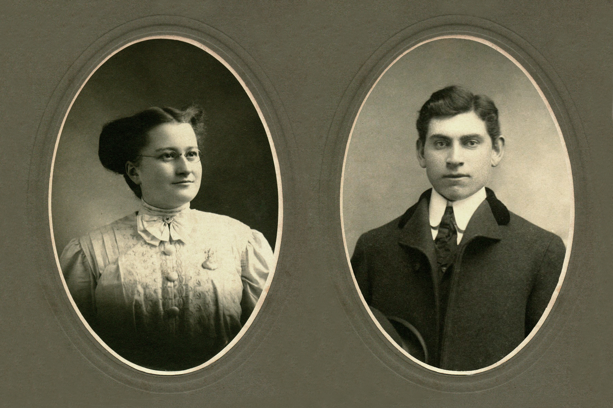
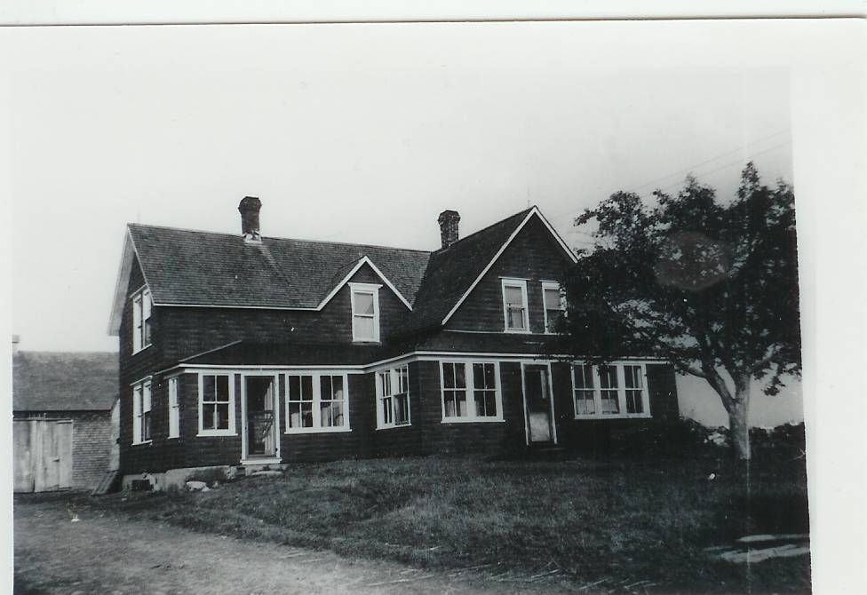
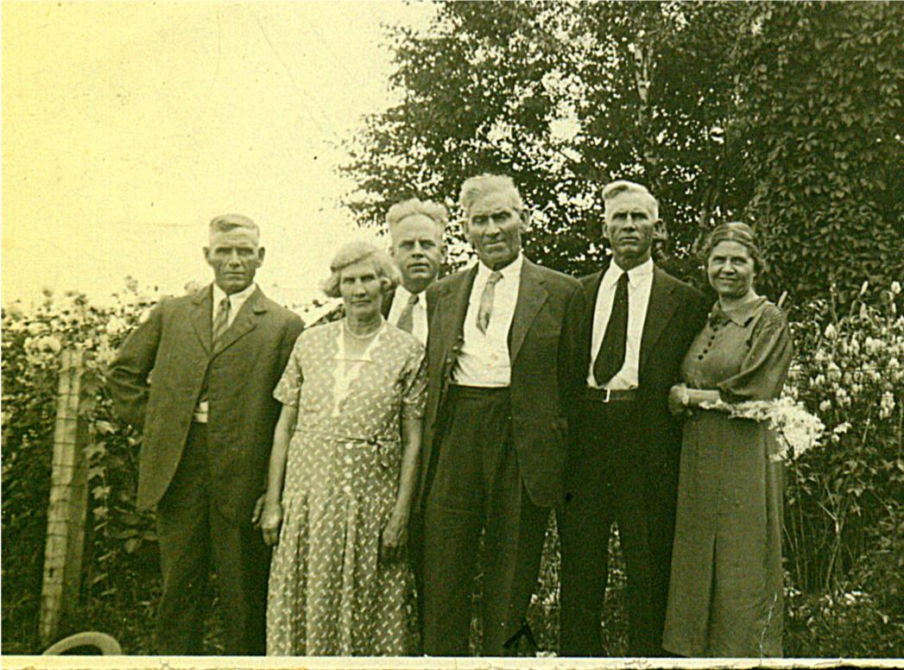
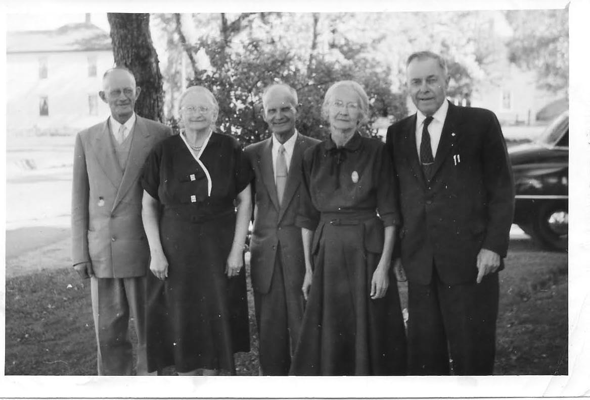
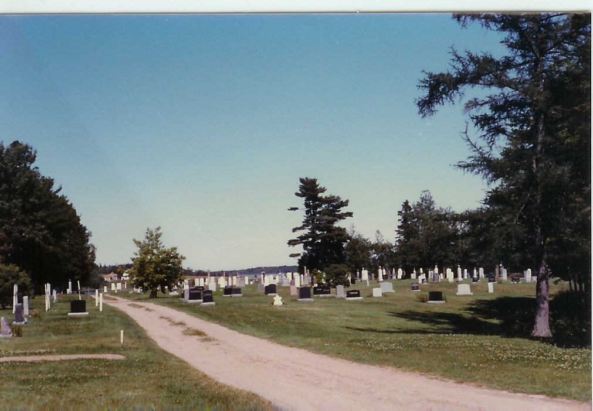

Elmer and Jane
Glendenning
Prepared by
Don Glendenning
for
Glendenning Family Reunion
July 27-29, 2012
Minor edit 2018
ELMER ALTON GLENDENNING
1875-1938
Elmer was the second child and first son of Walter and Elizabeth (Peters) Glendenning. He was born in Canobie on land that is now a grove of trees directly across the road from the Canobie School, now the Women’s Institute Hall.
It is likely that he went to the one room school, now long gone, located on a corner of his Uncle John’s farm next door. The family seems to have valued education; his grandmother having been a teacher lived in the home after his Grandfather died. As further evidence, his brother, Chip took a business course, Guy studied but did not finish dentistry and Margaret trained as a nurse. Other family records suggest that he may have taken some technical courses, probably at night in Portland, Maine. It is known that his oldest sister, Venetia, provided a home for his sister, Margaret, so that she could finish high school in Portland and likely did the same for her brother, Guy, as well.
Elmer’s father was a farmer and, judging by the amount of land accumulated, a successful one at that. Elmer, and all the boys, and maybe even the girls, would be expected to do their share. Since the homestead was an original grant, the land would have to be cleared of trees, and those who know Canobie, will remember the stony fields; and all the work would be done by hand or with the aid of horses.
It was not uncommon at the time for New Brunswickers to go to the North Eastern USA during the winter to work in the woods and then return to farm and fish in the summer and Elmer may have even done that himself. We also know, for example, that his Aunt, Mary Ann Harley, who had married a Stevens and lived next door in Canobie, had moved to Portland to be with family after her husband died in 1870. Records show that the Glendennings were well established in Portland in the first decade of the 1900s. Frank moved there in 1898 and Elmer by 1901. Venetia lived in Falmouth Foreside which is between Portland and Freeport. Other siblings known to have lived in Portland, at least for a while, include Margaret, Raymond and Guy. In addition, Maude and her husband, Jim Cormier lived in Lincoln, New Hampshire and Leonard and his family lived in Maine. He also had a number of first, and likely second, cousins living in Portland as well. At the same time, Canobie must have continued to tug on Elmer’s loyalty since land grant records show that Lot # 28 in Canobie, 100 acres, was granted to “Atton” E. Glendenning on 1901-07-06. .
Elmer, his brother, Frank, and likely brothers Chip, Ray and Guy, operated a cartage business, horses and wagons, under the name Glendenning Bros. & Co. (All Kinds of Team Work) at 24 Hammond Street. They had horses and wagons and did all kinds of hauling. Portland was the terminus of the Great Northern Railway, later the CNR, which meant that goods of all kinds had to be moved from trains and ships to warehouse and later to retail stores and homes. One role Dad told about was that of delivering ice to homes. In winter, his horses and crews were shipped to New Hampshire, but possibly also to Vermont and Maine to cut and haul wood on the mountainside.
By 1910, Elmer was working on the Rothschild dam for the generation of electric power in Wausau, Wisconsin.
JANE ELIZABETH JARDINE WATLING
1890 - 1964
Jane was the second youngest of a family of eight born to Jubal Watling and Grace MacAskill MacDonald, born, presumably at home, at the Meadows, Upper Black River, New Brunswick. She was named after Jane Elizabeth Jardine, a neighbour at the Meadows, who married Donald Cameron. Her Grandfather, also Jubal, had come from England in 1830, had lived for a few years in Prince Edward Island before moving, along with some siblings, to Black River where he married a neighbour, Christina MacNaughton. We do not know much about the family; presumably they had a small mixed farm but family lore suggests that Jubal, and maybe others, worked in the shipbuilding trade along the Miramichi. Jane attended the Upper Black River School as did her siblings, for the first 3-4 years. In later years, she recalled her concern about bears when walking to and from school.
As best we can tell, the family moved, when Jane was 11 years old, from the Meadows to Little Branch in 1901. The move came about when after her Grandfather MacDonald died and her Grandmother was not able to look after herself. The family may well also have been influenced also by being close to both school, Little Branch, and church, St. Stephen’s Presbyterian, which played an important role in the life of the family. It is likely that Jane attended the Little Branch School although we do not know for sure.
A number of Jane’s siblings also moved to the Portland area to seek employment. George was there in 1901, Janet worked at the Waltham watch factory, Jim worked for a number of years in a chemists/ photography shop in Portland, Jack worked in the Boston area,
Jane arrived in Portland just prior to her 18th birthday. She arrived at the train station in Portland in the early morning of January 24, 1908 and waited for her brother, George, to meet her. Apparently, he came to the station but did not recognize her; she had grown up while he was away from Black River. Among Jane’s possessions was an envelope, addressed in Elmer’s handwriting and mailed from Wausau, Wisconsin, to 130 Emery Street, Portland on January 25, 1910, just a few months before she and Elmer were married
ELMER AND JANE
We do not know how Elmer and Jane met. We do know, however, that Elmer’s first cousin, Millie, with whom he was very close, had lived with his family in Canobie after her mother died. Millie was married to Adam MacLean from Black River who Jane would have known, and they had two sons at the time of her Jane’s arrival. We also know that, less than three weeks after Janes arrival in Portland, Elmer’s father died on February 14, 1908 while visiting family; Jane looked after Millie’s two sons while Millie attended the funeral. We also know that a number of Jane’s siblings worked for Elmer at one time or another. So, the Watlings and Glendennings certainly knew each other.
Elmer and Jane were married at the home of her parents, Mr. and Mrs. Jubal Watling at Little Branch by Rev. George Grant on October 18, 1910. Dad told about travelling by train from Portland to Loggieville, then by horse and wagon to Little Branch; they honeymooned in Montreal. St. Stephen's Presbyterian Church annual report for 1910 includes the following:
GLENDENNING-WATLING At
the home of the bride's parents, on October 18, Alton Elmer
Glendenning of Bathurst and Jane Elizabeth Watling of Little Branch.
The couple returned to Portland (Bonny Eagle) after the wedding. From Jane’s autograph album we learn that friends gathered on December 1, 1910, to congratulate them on their recent marriage but also to wish them well on their plans to move to Tennessee where Elmer would take up work on a new hydroelectric dam then being built on the Ocoee River at Parksville. An entry in Jane’s household record book reads: "Commenced housekeeping, Parksville, Tennessee, Feb. 11th, 1911". Their first child, Grace, was born in Parksville on September 23, 1911. Shortly after, they moved up river where Elmer was employed on the building of a second dam, Ocoee #2.
On completion of the second dam, Ocoee #2, in either late 1913 or early 1914, the couple purchased the Jessie Macdonald property and returned to Little Branch to live. Shortly after their return, Elmer was appointed Postmaster of the Little Branch Post Office. Two years later, however, Elmer resigned as Postmaster and returned to heavy construction work, first to North Haven, Connecticut where daughter Lillian was born, and later to short stints in Abiline, Texas; Hampton, Virginia and Mussel Shoals, Alabama. While living in Hampton, Virginia a new daughter, Margaret Virginia, was added to the family.
Mary
Virginia Glendenning, the infant daughter of Mr. and Mrs. E. A.
Glendenning, died in the home of her parents at Langley Field
yesterday. Funeral services will be conducted at 3 o'clock this
afternoon by the Rev. Charles Friend, Pastor of the Hampton
Presbyterian Church. Burial will be made in St. John's Cemetery."
Death of an Infant
The Daily Press Newspaper, Hampton, Virginia
carried the above notice on January 13-20, 1918
The gravestone inscription in St. John's Episcopal Cemetery, Hampton, Virginia reads: "Margaret V. Infant of Elmer & Jean Glendenning Jan. 13,1918 Jan.18, 1918" (Lot 353)
Sometime in 1919, Elmer and Jane moved back to New Brunswick and took up residence in Little Branch.
The original house, owned by Miss Jessie MacDonald, Janes Great Aunt, was a traditional “story and a half” with a gable roof and built end on to the road – the right side of the home shown below. By 1920, they had five children and the house must have been very crowded. Soon, likely in the early 1920’s, the ell shown on the left side of the house was added. Most if not all of the lumber for the addition was cut on the property, including a hardwood for the floor and pine for pantry cabinets the barn was also enlarged by doubling its length and adding a shed at the back and included stalls for five horses, a new set of large doors to a new “barn floor”, haymow, and some pigpens. At some point a machinery shed and workshop was added to the west end of the barn, and a henhouse and grain shed were built as separate buildings. And of course, one must not forget the two-hole outdoor privy.

Glendenning Home
Glendenning Collection circa 1950
During his lifetime, Elmer purchased a number of small farms in the area, a farm for each son. Farms were “mixed”, that is, they usually included such cows, pigs, sheep, hens, geese, horses, turkeys; crops included a farm garden, oats, barley, wheat, buckwheat, and hay. As a result, income, or other goods through trade, was obtained from eggs, chickens, beef, pork, the sale of weaners (Piglets four to six weeks old), geese, turkeys, ducks, bales of hay, bags of grain, cream, potatoes, furnace wood, and butter, etc. In addition, it ensured that the family had meat and potatoes for their own use. Elmer had a team of oxen which he used around the farm.
Elmer was active in the community including the building of St. Paul's Presbyterian Church (on June 14, 1926 was elected to the first Board of Managers, was Secretary Treasurer during of the construction of the Black River Community Hall. He was active in the Orange Lodge, Odd fellows, and Masons. He was a founding member of an Agricultural Society (#103) and was its Secretary Treasurer for fourteen years. Both were tireless workers in support of St. Paul’s Presbyterian Church dedicated in 1930.

St. Paul’s Presbyterian Church
After several years of poor health, Elmer died on May 19, 1938; the poem that follows was composed, I believe by Mr. F. A. Fowlie, the day of his funeral:
“What a beautiful spot,” the stranger said,
As he paused and reverently bared his head.
The golden rays of the setting sun
Shone on slab and shaft, where many a one
Now free from labour and earthly care
In a narrow bed lies resting there.
The Black River Water waters flowing peacefully by
Reflected the blue of the summer sky;
Through the leafy branches of the trees
Softly rustled a gentle breeze.
Not far away echoed sweet and long
The notes of the robin’s evensong.
Remote from the noise of the busy highway
This “Village of Silence” so peacefully lay;
The little white church stands guard nearby
With its spire pointing up to the sky;
Here when sounds the bell on the Sabbath day,
The people meet, to worship and pray.
The church of their fathers’ stood nearer the shore,
It has gone, like all things that are no more.
‘Twas the labour of those who came first to this place
A vigorous, God-fearing, industrious race,
To build homes and wrest a living from the soil was their goal
Yet they did not neglect the deep need of the soul.
Many that sleep in this place of rest
Are far from their homeland, and those they loved best.
While we see the names of some who lie low
In “Flanders Fields” where red poppies grow,
These brave lads and their comrades suffered hardship and pain
God grant that such sacrifice may have not been in vain.
There comes to us too a memory sweet
Of a pastor, who guided the erring feet
Of his flock. For more than thirty years
He shared all their joys, their sorrows and fears.
When he answered the call and “entered into rest”
He was laid in this spot that we know he loved best.
The robin was silent and all else was still,
The shadows were falling on river and hill;
The deep prayerful silence of that evening calm
Fell o’er the spirit like a blest soothing balm,
As we turned from the spot marked by newly turned sod
Our thoughts were turned upward and nearer to God.
May 21st, 1938

Elmer and Siblings
: From left to right: Raymond, married to Hilda Ellis, Canobie, N.B.; Maude, married to Jim Cormier, Canobie, N.B.: Guy, married to Hazel Stultz, Bowling Green, Florida; Elmer, married to Jane Watling, Little Branch, NB; Chip, married Louise Ellis, Canobie, N.B.; Minnie, married Ed Weeks, Mill Neck, Long Island. Missing are Venetia, married to Bob Doring, Bowling Green, Florida; Margaret, married to Lucas Marsen, Boothbay Harbor, Maine; Leonard married to Alma Jagoe, Palerma, Maine and Frank married to Lillian Bartow, Portland, Maine. (Glendenning collection – circa 1937)
After 28 years of marriage, Jane Elizabeth Jardine (Watling) became a widow in 1938; she was 48 at the time. The two oldest daughters, Grace and Venetia, were married and living elsewhere; her daughter, Lillian, was living and working in the Boston area. Elinor and the five boys, the youngest being nine years old, were living at home.
The next decade, the wartime years, brought a number of significant changes to the community including the construction of the Miramichi Rural High School, the construction of an airbase at Chatham, a radar station at St. Margaret’s, and a bombing range on the road to Loggieville. These developments meant a significant growth of non-farm jobs for the community. The outbreak of hostilities also soon resulted in sons, sons-in-law, neighbours, relatives and friends entering the armed forces. The decade also brought improved roads, regular bus service to Chatham and electric lights. By the end of the decade, Black River had moved from a barter to a cash economy.
Jane continued to be active in the community generally and encouraged her family and others to do the same. She was especially active in her church, the Women’s Missionary Society, the Presbyterian League and the Women’s Institute. She believed in education and supported the construction of a high school for the area; she also encouraged her family and others to continue their schooling. Mother loved to have visitors. There were a half-dozen of us at every meal and putting up a meal for 15 after church on Sunday, or any other day, did not faze her a bit or if it did, she did not let on. I cannot ever even once remember her saying, I wish they hadn’t or wouldn’t come today. Meals were not fancy but they were always tasty. Of course, when the visitors were family, the daughters or daughters-in-law, pitched in to help.
After Norman and Jean married in 1950, Jane continued to live with them until she died in 1964. In reporting her death, the Chatham Gazette noted, “she took a keen interest in community activities and was especially interested in education.” At her death, the family farm passed to her son, Norman and his wife Jean, who continued to welcome family to the old homestead.

Jane’s Siblings
From left to right: James married Catherine Mills; Jane married Elmer Glendenning, Black River Bridge, NB; Ernest married
Alice MacLean, Loggieville, NB; Janet married John R. Godfrey, Black River Bridge, NB; Jubal George married Emma Ronan, New Hampshire. Missing are: Christina married John MacKenzie, Loggieville, NB; Elspeth married John W. MacNaughton; John married Erdine Kent, Swans Island, Maine.
(Courtesy Tina (Watling) Newton)

Elmer and Jane are buried in
The black River Community Cemetery
Blsck River, New Brunswick, Canada.